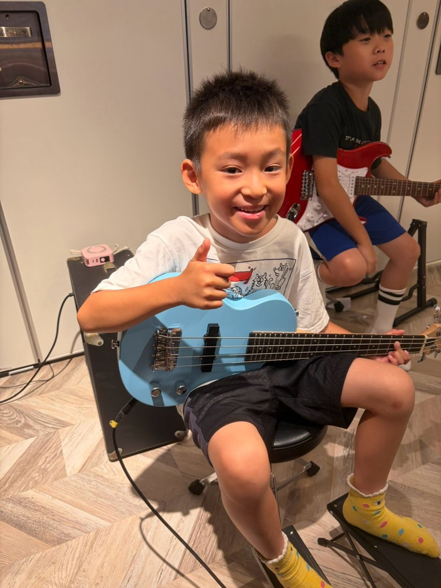
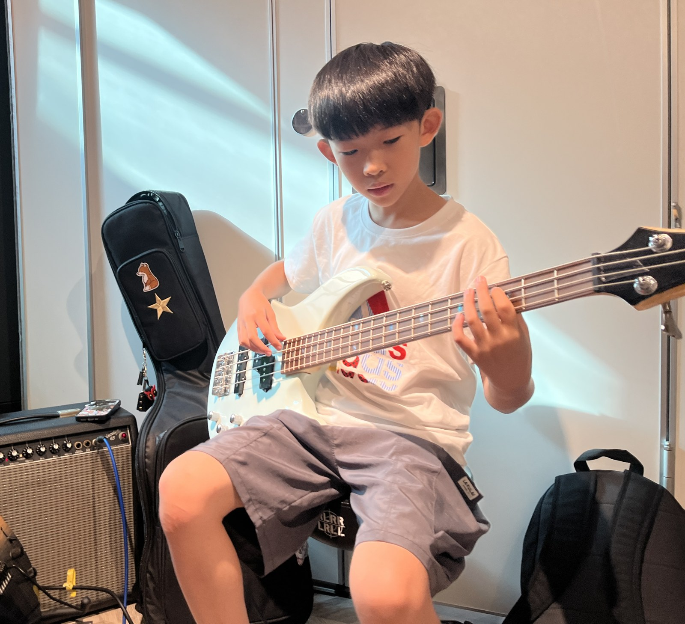
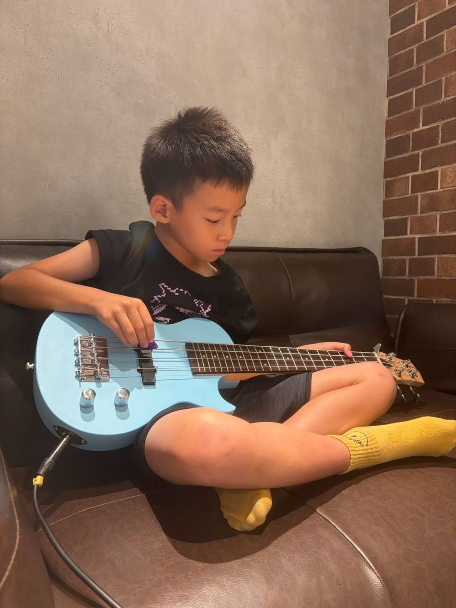

板橋 Bass 課｜電貝斯，兒童與成人
很多人第一次聽歌，幾乎沒注意到 Bass。把它拿掉，整首歌就散了。Bass 是電貝斯，走低音，也把拍子釘住。兒童、成人都可以學，個人班和團體班都有。一堂 50 分鐘，一期 12 堂。教室在國光國小正對面。

Bass 在一首歌裡做什麼？
鼓在打節奏，Bass 用低音線條跟它對在一起，吉他和鍵盤才有地方站。聲音不大，不代表可有可無。
Bass 課會學什麼？
- 右手撥弦、左手按弦
- 拍子打穩，和鼓對在同一拍
- 跟著一首歌走低音線條
- 和吉他、鍵盤、歌唱一起把一首歌合完
Bass 課：第一期 12 堂
| 堂數 | 這堂在做什麼 |
|---|---|
| 第 1–3 堂 | 先學習右手撥弦正確姿勢以及左手按弦的基礎手型，認識琴身跟指板、學會調音，並了解絕對音跟相對音的關係、數字和英文字的定義以及唱名（第一堂教室有 Bass 可以借用）。 |
| 第 4–6 堂 | 開始試著穩定節奏（四分音符與八分音符），聽懂爵士鼓的節奏並試著和爵士鼓咬在一起，以及練習一些簡單的和弦進行，聽懂旋律跟低音的關係。 |
| 第 7–9 堂 | 開始把音階融入到和弦進行當中產生過門，也會開始做拆拍訓練，做各種節奏的變化。 |
| 第 10–12 堂 | 開始挑戰目前速度極限內的一些延伸技巧，重新確認身體協調（能不能邊打拍子邊彈不同的節奏），然後試著錄音，把自己演奏的內容錄起來檢討。 |
| 最後一堂 | 拍攝成果驗收影片。 |
課程進度會依照每個人的程度與吸收狀況來安排。
兒童和大人
孩子把撥弦和拍子練穩，再跟著熟悉的歌走低音。大人零基礎也可以，多半帶著一首喜歡的歌，老師從那首歌的低音開始。已出社會的學員，請參考成人課程。
個人班和團體班
個人班是一對一，進度照這個人和目標來排。團體班和同伴一起學。人報得夠了才開班，最新時段請加入官方 LINE 詢問。
一堂 50 分鐘，一期 12 堂。依規定請假，一期可以補課 3 次。
Bass 在樂團裡的位置
電貝斯是樂團裡的低音，跟爵士鼓的大鼓咬在一起，用沉穩的低音線條撐起整首歌的律動，適合喜歡 Groove、想在樂團裡當支柱的人。
第一堂課教室有貝斯可以借用，確定喜歡之後再請老師幫忙挑琴。
和樂團一起合奏
Bass 能跟鼓對拍之後，就可以進樂團班，和吉他、鍵盤、爵士鼓、歌唱一起把一首歌合完。慕尼克也有親子樂團，爸媽可以和孩子一起演奏，參加方式請加入官方 LINE 詢問。新北板橋校區不定期辦成果發表，學員可以上台。

上課照片


上課地點與時間
地址：新北市板橋區中正路 325 巷 47 號 1 樓（國光國小正對面）
營業時間：週三、五 16:30–22:00；週四 14:00–22:00；週六、日 13:00–22:00；週一、二公休
交通：公車 307 港尾站步行 3 分鐘。捷運板橋站約 1.1 公里，騎 YouBike 約 5–7 分鐘。
停車：Times 中正路停車場走路約 2 分鐘，國光公園日月亭停車場走路約 4 分鐘。
想先看別的樂器，有板橋爵士鼓課、新北板橋吉他課、新北板橋鋼琴課、板橋樂團班，還有板橋歌唱課。
學費
課程採按期預收，每期 12 週。一堂課 50 分鐘，一期 12 堂。
團體班每堂 800 元起。
可用現金、匯款或信用卡付款。請假補課與退費規定，請看〈收費與退費辦法〉。
第一堂課怎麼開始
- 1. 怎麼約填寫預約表單，或加入官方 LINE；也可撥手機 0939-239-219、市話 02-8965-2288。
- 2. 多久一堂 50 分鐘。
- 3. 會做什麼第一堂教室有貝斯可以借用；確定喜歡後再請老師幫忙挑琴。
常見問題
沒學過 Bass，可以直接學嗎？
可以。從撥弦和左手按弦開始，進度照你現在的程度排。
幾歲可以學 Bass？
兒童和成人都可以學。還不確定，可先與老師確認。
大人可以學 Bass 嗎？
可以。零基礎也歡迎。已出社會、晚上才有空的學員，請參考成人課程。
家裡沒有 Bass 怎麼辦？
上課時教室有樂器可以用。家裡要準備什麼才能練，可先與老師確認，或加入官方 LINE 詢問。
Bass 和爵士鼓怎麼一起練？
Bass 走低音，也把拍子釘住。鼓打節奏。兩個人對準同一拍，歌才站得住。
學了 Bass 可以加入樂團嗎？
可以。板橋校區有樂團班，Bass、吉他、爵士鼓、鍵盤和歌唱一起把一首歌合完。親子樂團也可以，參加方式請加入官方 LINE 詢問。
Bass 課一堂多久？一期幾堂？
一堂 50 分鐘，一期 12 堂。時段請撥打手機 0939-239-219、市話 02-8965-2288，或加官方 LINE 詢問。非營業時間或老師帶學生演出時，市話可能無人接聽，請改撥手機。
新北板橋 Bass 課在哪裡上？
在新北市板橋區中正路 325 巷 47 號 1 樓，國光國小正對面。
第一堂課要自己帶 Bass 嗎？
不用。第一堂課教室有貝斯可以借用，確定喜歡、想在家練習時，再請老師幫忙挑琴。
不會看五線譜，可以學 Bass 嗎？
可以。Bass 常用直覺好懂的六線譜（Tab 譜），不認識五線譜也能看懂手指要放在哪一格。
想學 Bass，可在官網填表，或加入官方 LINE，告知想彈的曲子。
在官網填表預約加入官方 LINE撥打 0939-239-219撥打 02-8965-2288在Google留下評論非營業時間或老師帶學生演出時，市話可能無人接聽，請改撥手機。